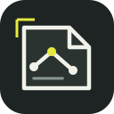
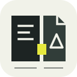
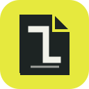
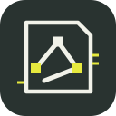
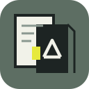
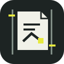

灵页 · 工业主题图标探索
保留原图标“文档 + 画布节点”的意义，探索折页、模块、负形、网络和终端结构。六款均为原创矢量设计；尚未替换安卓应用图标。











请同时看 64px 与 24px：小尺寸是否仍可识别，比放大时的细节更重要。SVG 可下载后在 Figma 中继续改形状和颜色。
保留原图标“文档 + 画布节点”的意义，探索折页、模块、负形、网络和终端结构。六款均为原创矢量设计；尚未替换安卓应用图标。






请同时看 64px 与 24px：小尺寸是否仍可识别，比放大时的细节更重要。SVG 可下载后在 Figma 中继续改形状和颜色。